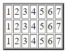
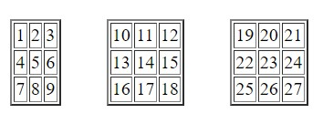

Поступово генерувати 100 випадкових чисел від 1 до 1000. Підрахувати яких чисел більше: парних чи непарних.
Вивести з використанням циклів маркований список з випадковими числами (1-100). Кількість випадкових чисел вводиться користувачем
Вивести таблицю з 3 рядків і 7 стовпців
Вивести 3 таблиці (по 3 рядки і 3 стовпці у кожній) за зразком
Користувач загадує число. За 3 спроби комп’ютер намагається вгадати число користувача (використати confirm).